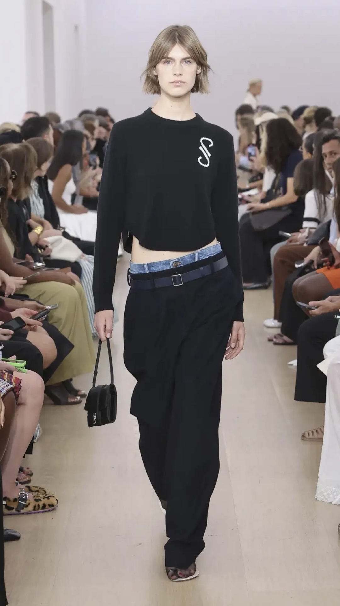
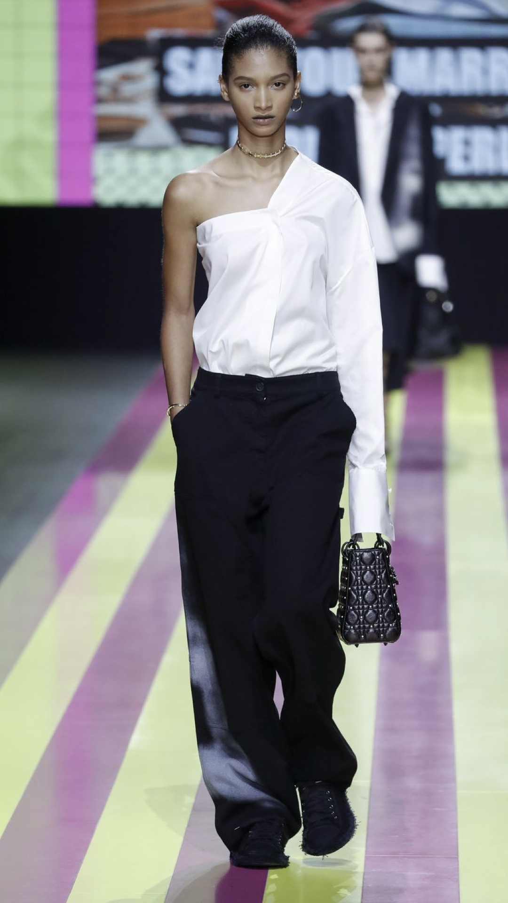
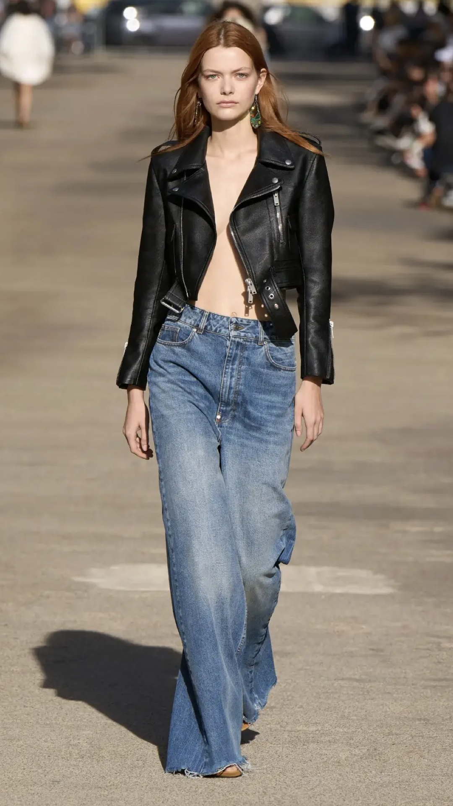
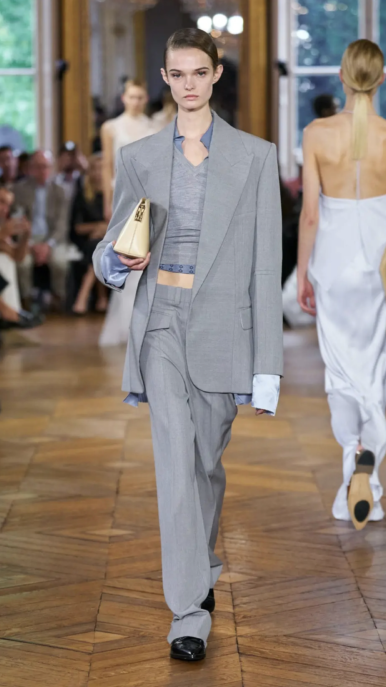
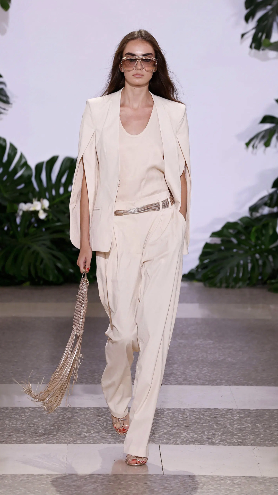
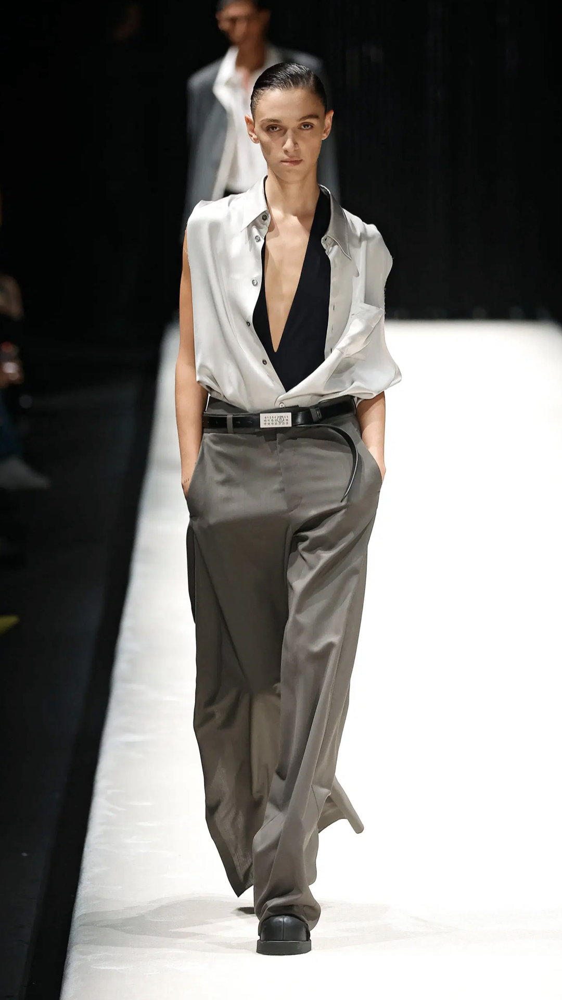

СВОБОДНЫЕ БРЮКИ С НИЗКОЙ ТАЛИЕЙ
Если в прошлых сезонах нам показывали низкую талию из нулевых, то здесь скорее отсылка к 90–м. Брюки свободнее, голого тела меньше, сверху часто пиджак или повседневный трикотаж.
Вместо провокации — сдержанный образ.
     